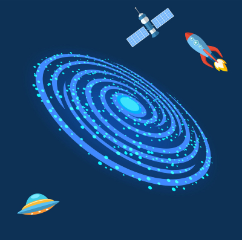

The Universe
The Universe is everything that exists, including the galaxies, all physical matter present in the galaxies like the stars and planets in space. At a particular instant roughly 15 billion years ago, all the matter and energy we can observe, concentrated in a region smaller than a dime, began to expand and cool at an incredibly rapid rate. After the universe had grown by another factor of 1,000, protons and neutrons combined to form atomic nuclei, including most of the helium and deuterium present today. By the time the universe had expanded to one fifth its present size, the stars had formed groups recognizable as young galaxies.
The present-day universe has provided ample opportunity for the development of life as we know it—there are some 100 billion billion stars similar to the sun in the part of the universe we can observe. Thirty billion years from now, galaxies will be much darker and filled with dead or dying stars, so there will be far fewer planets capable of supporting life as it now exists. In the near future, we expect new experiments to provide a better understanding of the big bang. The larger telescopes recently completed or under construction may allow us to see how the mass of the universe affects the curvature of spacetime, which in turn influences our observations of distant galaxies.
Our Galaxy
Our galaxy is called The Milky Way and it got it's name from it's milky appearance as it stretches across the sky. The Milky Way Galaxy is most significant to humans because it is home sweet home. But when it comes down to it, our galaxy is a typical barred spiral, much like billions of other galaxies in the universe. The Milky Way is a barred spiral galaxy, about 100,000 light-years across. The Milky Way also contains two significant minor arms, as well as two smaller spurs. One of the spurs, known as the Orion Arm, contains the sun and the solar system. The Orion arm is located between two major arms, Perseus and Sagittarius.

The Milky Way does not sit still, but is constantly rotating. At the center of the galaxy is the galactic bulge. Tucked inside the very center of the galaxy is a monstrous black hole, billions of times as massive as the sun. Galaxies like ours typically undergo a stellar baby boom, churning out stars in enormous quantities roughly 10 billion years ago. The most common stars in the galaxy are red dwarfs, a cool star about a tenth the mass of the sun. The Milky Way contains over 200 billion stars, and enough dust and gas to make billions more.
The Solar System
The planetary system we call home is located in an outer spiral arm of the Milky Way galaxy. The cloud collapsed, possibly due to the shockwave of a nearby exploding star, called a supernova. When this dust cloud collapsed, it formed a solar nebula—a spinning, swirling disk of material. Planets did not form: the asteroid belt is made of bits and pieces of the early solar system that could never quite come together into a planet. Other smaller leftover pieces became asteroids, comets, meteoroids, and small, irregular moons.ur solar system consists of our star, the Sun, and everything bound to it by gravity — the planets Mercury, Venus, Earth, Mars, Jupiter, Saturn, Uranus and Neptune, dwarf planets such as Pluto, dozens of moons and millions of asteroids, comets and meteoroids.

Beyond our own solar system, there are more planets than stars in night sky. The celestial bodies described which revolve around the solar system are: the sun, the planets, dwarf planets, dozens of moons and millions of asteroids, comets and meteoroids. Our solar system is the only place we know of that harbors life, but the farther we explore the more we find potential for life in other places. Both Jupiter’s moon Europa and Saturn’s moon Enceladus have global saltwater oceans under thick, icy shells.